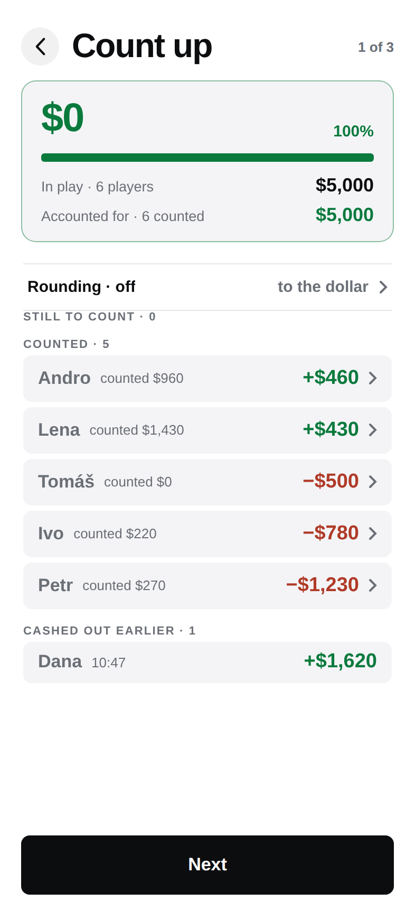
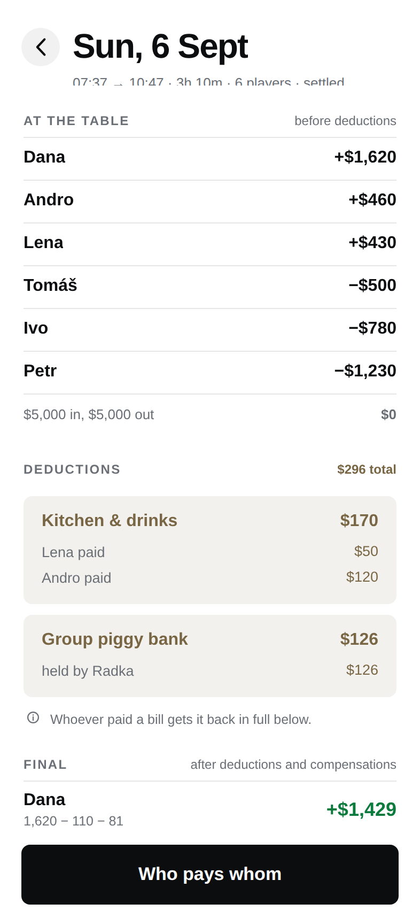
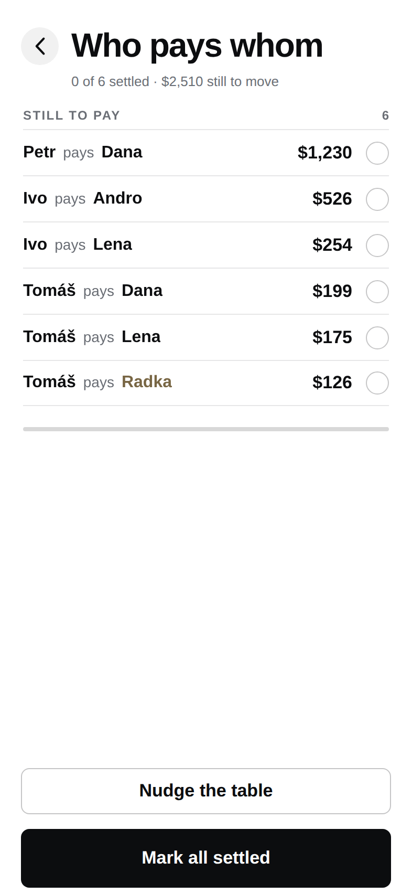

Green #6FCF97 becomes #0A7A3D and coral #F0705C becomes #B03A28 — the dark values would sit at about 2.5:1 on a bright ground. Geometry, type and copy are identical, which is the check: anything that differs between these three and their dark twins is a bug, not a theme.


